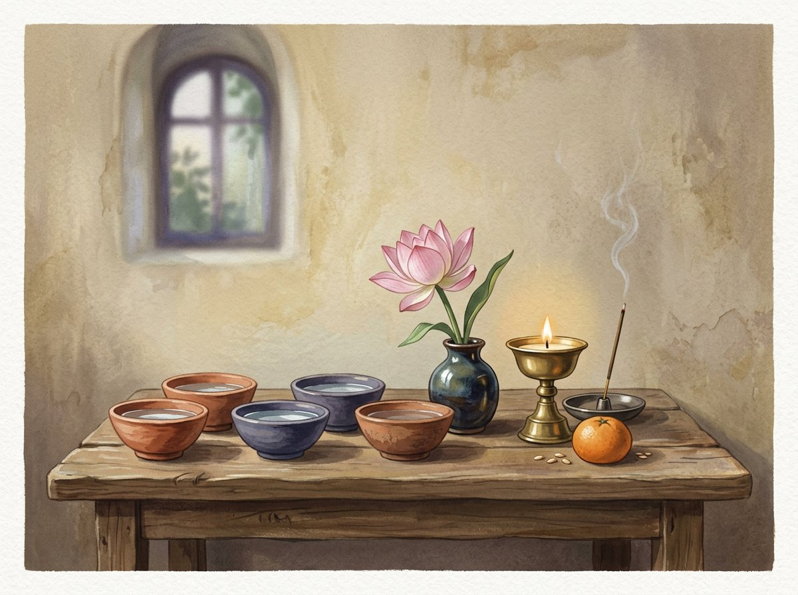

GROSSZÜGIGKEIT · RESPEKT · DANKBARKEIT
Buddhistische Opfergaben: Bedeutung und Tradition
In buddhistischen Traditionen kann eine Opfergabe Respekt, Dankbarkeit und die Absicht heilsamen Handelns ausdrücken. Ihr Sinn bemisst sich nicht am Wert des Gegenstands; Motivation, Achtsamkeit und der Kontext der Gemeinschaft zählen.

EINE GESTE DER GASTFREUNDSCHAFT
Darbringen als Ausdruck von Großzügigkeit
In manchen buddhistischen Kulturen knüpft das Opfer an Gastfreundschaft an: Ein geehrter Gast wird mit Wasser, Blumen, Duft und Speisen empfangen. Im religiösen Kontext kann man Buddhas, Bodhisattvas oder Lehrenden etwas darbringen und so Großzügigkeit und Dankbarkeit üben. Bräuche und Deutungen unterscheiden sich.
EINFACHE GABEN
Wasser, Blumen, Licht, Duft und Speisen
Auf einem Hausaltar können sauberes Wasser und frische Blumen stehen; man kann eine Lampe oder Kerze entzünden, Räucherwerk darbringen oder eine kleine Speise ablegen. Manche tibetische Praktiken verwenden mehrere Wasserschalen als Zeichen verschiedener Gaben. Diese Formen sind nicht für alle Buddhisten verpflichtend und unterscheiden sich je nach Übertragung.
PRAXIS OHNE KAUF
Die Absicht gibt der Geste Bedeutung
Für eine einfache Geste braucht es keine teuren Gegenstände. Man kann eine saubere Schale Wasser hinstellen, kurz Dankbarkeit erinnern und eine gute Absicht dem Wohlergehen anderer widmen. Bei Feuer oder Räucherwerk gelten die üblichen Sicherheitsregeln und die Vorgaben des Ortes.